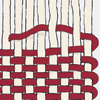
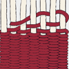
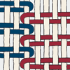
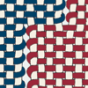

There are four tapestry weaving structures:

Plain weave
Plain weave is executed by interlacing warps and wefts. Each successive pass of the weft thread goes under the warps the previous pass went over, and over the warps the previous pass went under.

Weft-faced plain weave
In weft-faced plain weave, the warp threads are hidden by densely packed weft threads woven in the same manner as plain weave. Where two areas of color intersect, the weft threads join.
Interlocking tapestry weave
One way to link the colors is interlocking tapestry weave, in which the weft from one area is looped with the weft from the adjacent area.

Dovetailed tapestry weaving
Another way of creating transitions between areas of different colors is dovetailed tapestry weaving, which results when two wefts from adjacent areas alternately wrap around the same warp.

Closing a slit
When two wefts meet repeatedly without dovetailing or interlocking, they fail to create a lateral connection between adjacent areas and therefore produce a slit. As tapestries were usually woven so that the warp threads run horizontally, the weft threads have to support the weight of the work. Therefore, all slits would be sewn closed before the piece was hung, so the force of gravity would not pull the tapestry apart around the slits, creating visible gaps in the work.
Drawings by Isaac R. Facio, Department of Textiles, Art Institute of Chicago.